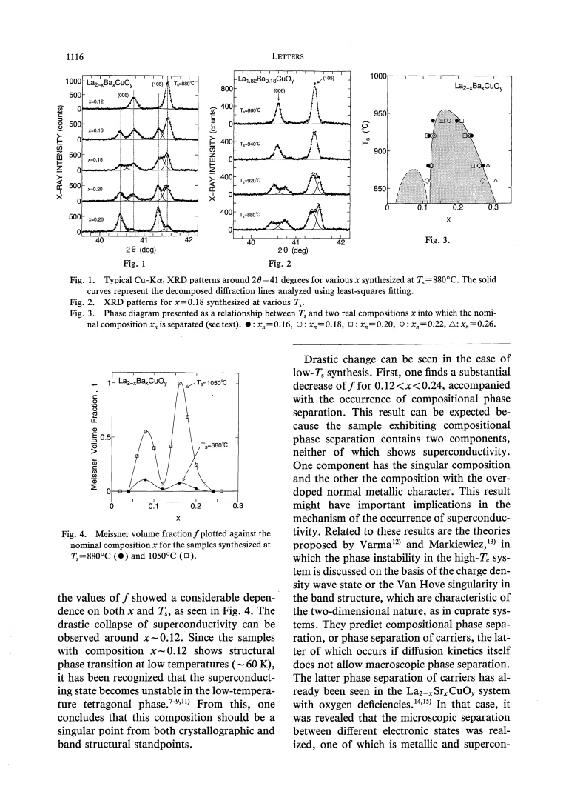

experiment · Yoshimura · supplied source 1993
Compositional Phase Separation in La₂₋ₓBaₓCuOᵧ near the Optimum Composition for Superconductivity
Long annealing reveals a chemical miscibility gap near nominal x = 0.16; this is distinct from electronic stripe order.
The question: Can nominally uniform LBCO separate into chemically different phases during preparation?
Before you start: the few terms you need
- miscibility gap: compositions that separate into two chemical phases at equilibrium
- diffraction splitting: distinct lattice spacings produce distinct peak positions
- annealing: heat treatment that allows atomic redistribution
See → explain → test
Understand it in four pictures.
Picture 1 / 4
Preparation changes the answer
Look for: Compare direct synthesis with mixtures of preformed compositions.
Swipe across the picture to read every label, or enlarge it below.
- Route A: starting oxides
- Route B: preformed endpoints
Teaching comparison of the actual preparation routes.
The route and grain scale determine how quickly the sample approaches chemical equilibrium.
Picture 2 / 4
Resolve two lattice spacings
Look for: Follow the split diffraction peaks and their changing relative weights.
Swipe across the picture to read every label, or enlarge it below.
- Anneal at lower temperature
- Resolve two XRD peaks
- Calibrate lattice spacing
- Infer endpoint compositions
Peak splitting is the observation; composition calibration supplies the chemical interpretation.
Two weakly changing peak positions with shifting intensities support two chemical compositions.
Picture 3 / 4
Separate Tc from magnetic amount
Look for: Compare samples annealed at 880 °C and 1050 °C.
Swipe across the picture to read every label, or enlarge it below.
- Transition temperature
- Diamagnetic amplitude
No schematic curve substitutes for the measured composition dependence.
The diamagnetic amplitude is greatly reduced over a range where Tc changes much less.
Picture 4 / 4
Do not confuse two separations
Look for: Contrast atomic composition domains with electronic stripes.
Swipe across the picture to read every label, or enlarge it below.
- Chemical phase separation
- Electronic stripe order
Conceptual distinction; only the first is directly investigated by this source.
Redistribution of Ba during high-temperature annealing is not proof of charge stripes within a CuO₂ plane.
Predict before revealing
A long anneal lowers the magnetic response, but diffraction does not yet resolve two peaks. Which conclusion is justified?
Choose an answer, then compare the reasoning.
The source discusses kinetic limits and different length sensitivities; unresolved splitting does not uniquely determine the microscopic state.
Read the answer
Small domains or slow diffusion can limit diffraction resolution The source discusses kinetic limits and different length sensitivities; unresolved splitting does not uniquely determine the microscopic state.
Go deeper Follow the full argument
The preparation problem
Yoshimura and colleagues ask whether the composition region usually favorable for LBCO superconductivity can be chemically unstable. Their focus is a solid-solution miscibility gap, not an electronic density wave. Route A starts with oxide or carbonate reagents and repeatedly calcines samples at temperatures between about 860 and 1050 °C. Route B mixes preformed low- and high-Ba compositions before lower-temperature annealing. The second route avoids some unwanted phases encountered in direct low-temperature synthesis at high Ba content, but makes equilibration slower. Samples are quenched after treatment so room-temperature diffraction can record the retained high-temperature chemical state. Powder size and a subsequent lower-temperature oxygen treatment are also controlled. This preparation history is part of the scientific result: a single nominal formula does not guarantee that the final material is a single equilibrium chemical phase.
The diffraction evidence
At an annealing temperature of 880 °C, selected diffraction lines split for a range approximately 0.12 < x ≤ 0.26. The positions of the two components change relatively little as the nominal composition changes, while their intensities change. That behavior is consistent with two endpoint compositions whose proportions vary through a miscibility gap. The authors infer the endpoint Ba contents by calibrating lattice parameters against high-temperature solid solutions. The resulting phase diagram places the maximum separation temperature near 950 °C and nominal x near 0.16. The calibration is an inference connecting lattice spacing to chemistry; diffraction does not count Ba atoms directly. The gap shown at low x in a dashed part of the phase diagram is explicitly tentative and is not established by resolved peak splitting.
Why waiting time matters
Chemical separation requires atomic diffusion. The authors report that route A can approach the relevant equilibrium on a scale of days, whereas route B can require around 60 days at 880 °C. They attribute this contrast to approximate grain radii of 0.1 and 1 μm. Diffusive redistribution time grows with the square of the distance, so a tenfold larger length can demand about a hundredfold longer treatment. Estimated diffusion coefficients span a broad range, roughly 10⁻¹⁰ to 10⁻¹³ cm²/s. Importantly, simply taking a previously high-temperature sample and annealing it lower does not always produce clearly resolved splitting, even after months. A failure to resolve two XRD peaks can therefore reflect kinetics or insufficient domain growth rather than a definitive absence of chemical instability.
The superconducting consequence
The low-temperature ac susceptibility changes strongly with annealing history. At 880 °C, the magnetic amplitude is small over much of approximately 0.12 < x < 0.24 compared with specimens treated at 1050 °C. The transition temperature itself changes much less than the amount of magnetic response. The authors interpret the separated endpoint phases as unfavorable for superconductivity: one lies near the anomalous one-eighth composition and the other is more heavily overdoped. That explanation connects their chemical phase diagram to the diminished response, but susceptibility is not a direct local measurement of each endpoint's pairing. Their discussion also notes a large magnetic-response decrease in a sample for which macroscopic peak splitting remains unresolved. Superconductivity can be sensitive to small-scale inhomogeneity before conventional diffraction resolves separate bulk phases.
Read the title literally
Compositional phase separation here means that different regions acquire different atomic compositions during prolonged high-temperature processing. Electronic stripes describe a modulation of holes and spins within a chemically specified CuO₂ system. They can coexist with chemical inhomogeneity, but one observation is not evidence for the other. This source is therefore valuable as a materials-control warning when comparing nominally identical LBCO specimens. Track synthesis temperature, annealing duration, grain scale, oxygen treatment and whether the chemical state was equilibrated. The lever-rule picture helps organize the XRD intensities without inventing an electronic mechanism. Read the inferred phase boundaries with the calibration and kinetics limits in mind, and keep the dashed low-doping proposal separate from the experimentally resolved miscibility gap near the superconducting optimum.
Translate the mathematics Key equations and symbol meanings
xnominal = fa xa + fb xb; fa + fb = 1
Symbols: xa, xb: inferred compositions of the two phases; fa, fb: their proportions.
Teaching lever rule for a chemically separated mixture. It organizes shifting peak weights; it does not measure electronic stripe filling.
tdiffusion ∝ ℓ² / D
Symbols: ℓ: redistribution distance; D: diffusion coefficient.
Explains why larger grains can take much longer to equilibrate. The paper's kinetic estimates are broad.
Read the evidence A guided look at the original figures

Open the full original page ↗
Open the full original page ↗
What this paper does—and does not—establish
- Endpoint compositions use lattice-parameter calibration; nominal x is not a direct local composition measurement.
- Slow equilibration and diffraction resolution limit absence-of-splitting conclusions.
- Chemical separation must not be relabeled as electronic stripes.
Explain it back.
Try answering aloud before opening the explanation.
Why do fixed peak positions with changing weights suggest a miscibility gap?
The endpoint compositions stay similar while their relative amounts accommodate different nominal compositions.
What makes route B slower?
Its larger grain scale increases the distance over which atoms must diffuse.
Is the dashed low-x gap an observation?
No. It is a tentative extension rather than a gap established by resolved diffraction peaks.
Connect the next paper.
Source version, reading coverage and preservation
All four scanned PDF pages read visually at full page resolution, including diffraction figures and kinetic discussion.
Reviewed body pages: 1, 2, 3, 4. References are not independently re-read; no separate supplementary file supplied.
Original file retained byte for byte. SHA-256: f09128834a5aa1de61fdc2c8427e26f9e03ef04b415a861752e3f85f51bb4268
Filename: JPSJ - Yoshimura - Compositional phase separation near optimum LBCO - 1993.pdf.